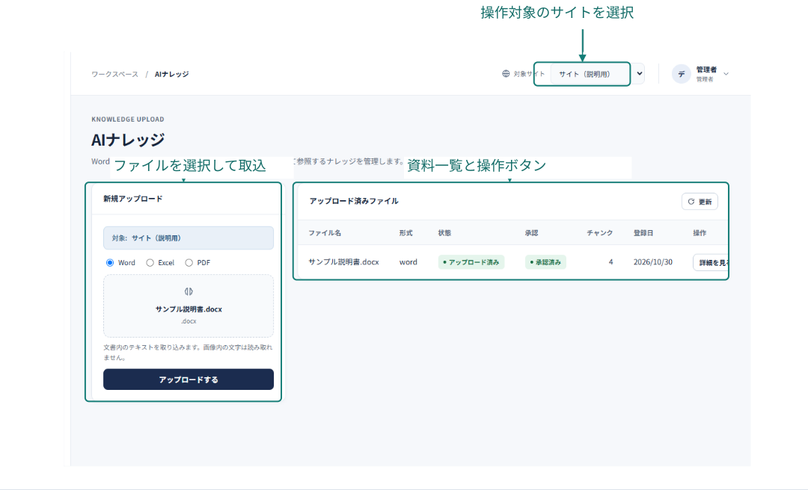

資料の準備
Word .docx、Excel .xlsx / .xls、文字を読み取れるPDFを用意します。内容を整理し、古い情報と現在の情報が混在しないようにしてください。
資料の選択
サイトを選択 → Word / Excel / PDF → ファイルを選択 → アップロードする。

処理中
アップロードする → アップロード・処理中… → 本文を読込 → 文章を分割 → 検索用ベクトルを作成 → DBに保存。

これは資料を検索に使うための準備です。この時点では訪問者への回答を作成しません。
結果と承認状態
アップロードが完了しました。 → 選択ファイルを解除 → 右側の一覧を更新。

管理者がアップロード → 承認済み。スタッフがアップロード → 承認待ち。エラー時は通知し、再試行できるよう選択ファイルを残します。
エラー・処理中の案内が出た場合
通知を確認 → 少し待って再試行。送信後に通信が切れた場合は、更新ボタンで一覧を確認してから再アップロードしてください。すでに保存されている場合があります。
次のページ： 資料の確認・承認・削除。